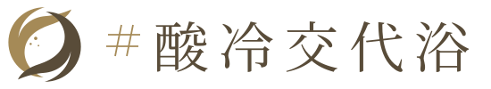

001 / 熱とからだ
サウナで温まるとき、からだの中では何が始まる？
- 余分な熱を逃がそうとする
- 熱を逃がす働きを休ませる
- 体温の目標を室温に合わせる
- 内臓だけを冷たいまま保つ
答えと解説を見る
正解：余分な熱を逃がそうとする
暑さを感知すると、体温を調節する仕組みが働きます。熱を受けながら、からだは同時に冷やす方向にも動いています。
次の一浴へ
温めている間も、からだは熱を逃がそうと働いています。その頑張りまで感じてみよう。

のススメA LITTLE WISER. A BETTER BATH.
温浴マニアも、サウナはじめましても。
思い込みを一枚ぬいで、100問の湯けむりへ。
正解したら、うれしい。
間違えたら、今日の収穫がひとつ増える。
100問
進み具合はこのブラウザだけに保存します。別の端末には引き継がれません。
浴室やサウナ室へスマホは持ち込まず、入浴の前後にどうぞ。熱さの我慢比べは出題しません。
EVERY ANSWER IS A SOUVENIR.
熱とからだ、お湯と炭酸泉、冷水と休息、ことばと作法。各25問。答えたあとには、理由と「次の一浴へ」のヒントが待っています。気になる答えは出典まで。クイズのあと、きっと浴槽の掲示が少し違って見えるはず。
点数は答えた問題の正答率です。未回答は不正解にしません。途中でも称号は付きますが、結果と共有文には回答数・正解数・途中結果を明記します。0問のままなら未採点です。
称号はこのクイズのお楽しみ。専門資格や入浴の安全性を認定するものではありません。10問での100％と、100問での100％は回答数を添えて区別します。
001 / 熱とからだ
正解：余分な熱を逃がそうとする
暑さを感知すると、体温を調節する仕組みが働きます。熱を受けながら、からだは同時に冷やす方向にも動いています。
温めている間も、からだは熱を逃がそうと働いています。その頑張りまで感じてみよう。
002 / 熱とからだ
正解：熱の受け渡しを調節するため
熱に対する反応の一つが皮膚の血流増加です。体温調節を助けますが、全身のすべての臓器で血流が一様に増えるという意味ではありません。
肌が温まる裏側には、熱をやりとりする循環の働き。全身一律の血流アップとは違います。
003 / 熱とからだ
正解：深部体温も上がることがある
熱を逃がす仕組みが働いても、入ってくる熱との釣り合いによって深部体温は上がります。調節していることと、一定に保ちきれることは別です。
冷やそうとする働きがあっても、深部まで温まります。体温調節に任せきりにはしない。
004 / 熱とからだ
正解：湿度や気流、体調も関わる
熱の負担には、空気の温度だけでなく湿度、気流、放射熱、からだの状態も関わります。温度計の数字一つでは体験を比べきれません。
温度計は大切な手がかり。でも、同じ数字で同じ熱さとは限らない。今日の感覚も見よう。
005 / 熱とからだ
正解：熱への循環の反応が起きるから
健康成人を調べた実験でも、サウナ中に心拍数の上昇が観察されました。からだは静止していても、循環は熱に対応しています。
見た目は休憩中でも、循環は働いています。心拍の高さを楽しさの得点にしなくて大丈夫。
006 / 熱とからだ
正解：入っている時と出た後は別
一つの実験では入室中に血圧が上がり、回復期には低下しました。人や条件でも反応は変わるので、測った場面を確認するのが大切です。
血圧の話には「いつ測った？」を添えよう。入室中と休憩中では、からだの仕事が違います。
007 / 熱とからだ
正解：運動を置き換えられるとは言えない
心拍の変化が似ていても、運動全体と同じ効果とは限りません。運動とサウナを組み合わせた試験も、運動をサウナに置き換えた試験ではありません。
サウナと運動は、同じ心拍でも同じ体験ではありません。別々の楽しみとして組み合わせよう。
008 / 熱とからだ
正解：体温調節や循環が適応する
繰り返す暑熱への適応を暑熱順化といいます。適応には時間と個人差があり、慣れた人が熱の影響を受けなくなるわけではありません。
慣れは根性の勲章ではなく、少しずつ起きるからだの適応。熱に無敵になるわけではありません。
009 / 熱とからだ
正解：暑さへの慣れは弱まることがある
暑熱順化は、暑い環境から離れると弱まることがあります。これは一般的な暑熱生理の知見で、サウナの休止日数から適切な利用時間を計算できるという意味ではありません。
久々の一浴は、昔の自分との勝負にしない。以前の記録より、今のからだに合わせて楽しもう。
010 / 熱とからだ
正解：涼しい休憩で順化が台無しにはならない
NIOSHは、冷房が暑熱順化を妨げるわけではないと説明しています。休むことと慣れることを、二者択一にする必要はありません。
涼しい場所でひと息ついても、慣れが台無しにはなりません。休憩を遠慮なく楽しもう。
011 / 熱とからだ
正解：全員共通の最適値は決まっていない
系統レビューでも、目的やサウナの種類、対象者ごとの最適な頻度・時間には追加研究が必要とされています。研究条件は、そのまま万人の正解ではありません。
何分何セットは、全員共通の正解ではありません。時計に合わせるより、今日の自分に合わせよう。
012 / 熱とからだ
正解：温め方や湿度の違いを確かめる
熱源や湿度が違えば、からだとの熱のやりとりも変わります。乾式サウナの研究結果を、別の種類へそのまま当てはめることはできません。
サウナにもいろいろな温まり方があります。研究を読む時も、自分の好きな種類か確かめよう。
013 / 熱とからだ
正解：習慣と死亡率に関連が見られた
フィンランドの長期観察研究で関連が見られました。ただし、生活習慣などほかの違いを完全には取り除けず、サウナだけの因果効果は確定しません。
うれしい研究は、期待の入口に。「関連がある」と「それだけが原因」は分けて読もう。
014 / 熱とからだ
正解：誰を、どんな暮らしの中で調べたか
この研究は、開始時42～60歳のフィンランド男性を追跡しました。年齢・性別・健康状態・サウナ文化が異なる人にも同じ結果が出るとは限りません。
「誰に起きた結果？」まで読めると、情報との距離がちょうどよくなる。自分への約束にしない。
015 / 熱とからだ
正解：利用頻度と将来の発症に関連があった
中年のフィンランド男性を追った観察研究では、頻度と後の認知症発症に関連が見られました。予防や治療の効果を確定した試験ではありません。
将来の健康につながる可能性は楽しみに。でも、認知症を防ぐと約束する言葉には一度立ち止まろう。
016 / 熱とからだ
正解：同じ参加者から複数の論文が出る
ここで挙げた2015年の死亡率論文と2017年の認知症論文は、同じKIHD集団を使っています。論文の本数と独立した集団の数は別です。
論文の数だけで期待を膨らませすぎない。同じ人たちから届いた別の発見、という場合もあります。
017 / 熱とからだ
正解：血圧など一部の指標に上乗せの改善
47人の試験で、運動＋サウナ群は運動のみの群より収縮期血圧や推定心肺体力などが改善しました。一方、測ったすべての指標で差が出たわけではありません。
運動のあとに楽しむサウナには、研究上の期待もあります。「全部に効く」まで広げず味わおう。
018 / 熱とからだ
正解：長期の病気や寿命は別に調べる必要がある
短期の指標は大切な手がかりですが、発病や死亡という長期の結果とは別です。この試験から、何年長生きするかは分かりません。
短期の変化も、大切な発見。ただ、数週間の成果を何十年先の約束に変えないで楽しもう。
019 / 熱とからだ
正解：症状全体の重さに明確な群間差はなかった
熱い乾燥空気と常温空気を吸う群の比較で、主評価の症状全体の重さに有意差はありませんでした。通常のサウナ浴とは異なる実験ですが、風邪治療の根拠にはなりません。
熱い空気は、風邪を治す切り札にはなりません。元気な日の楽しみとして、サウナを待たせよう。
020 / 熱とからだ
正解：小規模研究で精子への影響が見られた
正常な精液所見の男性10人で、反復利用後の精子数や運動性などの低下が報告されています。妊娠率への影響を直接測った研究ではありません。
からだの事情によって、楽しみ方の相談は変わります。妊活中なら、熱の影響も話題にしてみよう。
021 / 熱とからだ
正解：追跡で測定項目の回復が見られた
この研究では、中止から6か月時点で測定した変化の回復が報告されました。10人の結果で、全員の回復時期や妊娠の可否が分かるわけではありません。
「影響があった」の続きも読もう。この研究は回復まで観察しており、永久的な不妊の証明ではありません。
022 / 熱とからだ
正解：暑い中で走る時の体温・心拍の負担が軽くなった
20人の中距離走者の研究では、練習にサウナを加えた群で、暑熱運動時の体温・心拍などに適応が見られました。小規模かつ群を自己選択した研究です。
温まる習慣が暑さへの適応に関わる研究もあります。ただし、暑さに無敵になる話ではありません。
023 / 熱とからだ
正解：研究対象と管理条件が違うので写さない
選手を対象にした研究の条件は、一般客への推奨手順ではありません。体力や普段の運動、測定・管理の条件まで含めて結果を読む必要があります。
論文のメニューは、あなたへの処方箋ではありません。研究の数字を我慢の目標にしないでね。
024 / 熱とからだ
正解：対象や温度などを管理した療法として読む
心不全の温熱研究には、管理された遠赤外線・和温療法が含まれます。その結果を、一般施設での高温サウナ利用へ直接置き換えることはできません。
治療のための温熱と、施設で楽しむサウナは条件が違います。病気がある時は、その違いから相談を。
025 / 熱とからだ
正解：不調のサインとして熱から離れる
頭痛や吐き気は暑熱による不調で起こりえます。成果や上達の印ではありません。症状が続く・強い時は施設スタッフに助けを求めてください。
気持ちよさの先に我慢は要りません。不調で切り上げる判断も、長く楽しむための大切な上達です。
026 / お湯と炭酸泉
正解：二酸化炭素（CO₂）
炭酸泉で注目するのは、お湯に溶けた二酸化炭素です。酸素風呂など、別のガスを使う浴槽とは区別します。
名前は似ていても、溶けているガスは別もの。まずは浴槽の説明で、CO₂の文字を探してみましょう。
027 / お湯と炭酸泉
正解：見た目だけでは数値を決められない
濃度は溶けているCO₂の量を表す数値です。気泡の見た目を数値測定の代わりにはできません。施設の浴槽濃度の案内や測定値を確かめましょう。
泡は楽しむ。濃度は数字で確かめる。目のよさより、浴槽の掲示の読み方が頼りになります。
028 / お湯と炭酸泉
正解：温度が高いほど、溶けにくくなる
CO₂の水への溶解度には温度依存性があります。同じCO₂分圧で平衡にある場合、入浴温度付近では高温ほど溶けにくくなります。浴槽での実際の濃度は供給設備にも左右されます。
ぬるめの炭酸泉にも、理由があります。湯温だけで勝敗をつけず、炭酸の濃度と一緒に見てみましょう。
029 / お湯と炭酸泉
正解：指定成分の条件を満たせば、呼べる
温泉法上は、源泉の温度が25℃以上という条件、または指定成分の条件のどちらかを満たすことで温泉に該当します。冷たい源泉でも温泉になり得ます。
「温泉」の温は、湯加減の合格印ではありません。冷たい源泉にも、成分を読む楽しみがあります。
030 / お湯と炭酸泉
正解：温泉は250、療養泉は1,000mg/kg以上
環境省の表では、遊離CO₂による温泉法上の該当基準が250mg/kg以上、療養泉の該当基準が1,000mg/kg以上です。源泉の分類基準で、人工炭酸泉の浴槽すべてに同じ認定を与える数字ではありません。
250と1,000は、同じ意味の数字ではありません。源泉の分類と、いま入る浴槽の濃度を分けて読みましょう。
031 / お湯と炭酸泉
正解：温かく感じても、低下していた
男性6人の実験では、34℃・1,000ppmの炭酸泉で温かい感覚が報告された一方、鼓膜温は低下しました。気持ちのよい温感と、深部体温の変化は同じものではありません。
「温かい」と「体温が上がる」は別の話。感覚を楽しみながら、体温計の仕事まで感覚に任せないこと。
032 / お湯と炭酸泉
正解：その研究で測った部位・条件で増えた
2002年の実験で真水より血流が増えたのは、お湯に浸かった前腕の皮膚です。浸かっていない胸の皮膚では条件間の差がなく、全身の血流が最大になる証拠ではありません。
血流の話には「どこの？」を添えると理解が深まります。肌の研究から、全身の効果へ飛びすぎないように。
033 / お湯と炭酸泉
正解：浴槽の湯温と、溶存CO₂濃度
炭酸泉の実験では温度とCO₂濃度を定めて比較します。実際に入る浴槽の湯温・濃度が手がかりです。源泉の分析値と、加温・循環後の浴槽値は同一とは限りません。
名湯探しに、温度と濃度のふたつの物差しを。口コミの「強い！」に、数字をひとつ足してみましょう。
034 / お湯と炭酸泉
正解：1g
ppmは100万分の1を表します。質量比で1,000ppmは1,000mg/kg、つまり1g/kgです。表示がmg/Lの場合は体積基準なので、厳密には密度も関係します。
ppmは難しい呪文ではなく、割合の単位。1,000mg/kgは1g/kgと読めると、掲示が少し身近になります。
035 / お湯と炭酸泉
正解：手がかりになるが、誰にでも同じとは限らない
小規模な生理学実験は、仕組みを知る大切な手がかりです。一方、対象者・湯温・濃度・時間が限られるため、すべての利用者の感触や長期効果を保証するものではありません。
研究は、湯の中の不思議を照らすライト。照らせた範囲まで読めると、期待の持ち方も上手になります。
036 / お湯と炭酸泉
正解：就寝の1〜2時間前
2019年の系統的レビューとメタ解析では、就寝1〜2時間前の温浴・シャワーで、寝つくまでの時間が短くなる傾向が報告されました。眠りを保証する時刻ではありません。
お風呂と布団の間に、ひと息の時間を。寝る直前まで熱さをためこむより、ゆっくり夜へ切り替えてみましょう。
037 / お湯と炭酸泉
正解：手足などから熱を逃がしやすくなるため
温浴後に手足の皮膚血流が増えて熱を外へ逃がしやすくなり、深部体温の低下を助ける、という仕組みが睡眠研究で論じられています。単に熱いまま寝るという話ではありません。
温めたあとに、熱を逃がす。その流れもお風呂の楽しみ方。湯上がりは暑すぎず、くつろげる環境へ。
038 / お湯と炭酸泉
正解：眠ろうとしてから実際に眠るまでの時間
入眠潜時は、眠りにつくまでの時間を指します。2019年の温浴レビューでも評価された指標で、睡眠時間の長さや、翌朝の気分とは区別します。
「よく眠れた」を一つの数字に押し込めないこと。寝つき、途中の目覚め、翌朝の感覚を分けて見てみましょう。
039 / お湯と炭酸泉
正解：汗などによる水分変化を含む
サウナ直後の体重減少を調べた研究は、失われた体液の補給を重視しています。短時間の体重差だけから、その分の脂肪が燃えたと判断することはできません。
体重計のごほうびに見えても、水分の置き忘れかもしれません。減った数字より、湯上がりの補水を大切に。
040 / お湯と炭酸泉
正解：体格などで違い得るので、変とは限らない
19〜20歳674人を対象とした研究では、BMIの違いとサウナ後の体重減少に関連がありました。自分と他人の発汗・体重変化を、同じ目盛りで競わないことが大切です。
汗の量にも個性があります。友人の滞在時間や体重差を目標にせず、その日の自分の様子を基準に。
041 / お湯と炭酸泉
正解：入浴前後に、それぞれコップ一杯程度
環境省の温泉入浴の案内は、入浴前と入浴後にコップ一杯程度の水分を勧めています。固定の量で一日中十分という意味ではなく、発汗や体調に合わせて補います。
お風呂の準備に、飲み水も入れておく。入る前と出たあとに一杯、という小さな習慣が休憩の合図になります。
042 / お湯と炭酸泉
正解：少量ずつ、こまめに飲む
米NIOSHの暑熱労働向け資料は、間隔を空けて大量に飲むより、こまめに飲むことを勧めています。労働時の具体的な飲水量を、そのまま全員のサウナ量には当てはめません。
「出たら一気に」だけに頼らず、休憩のたびに水分を意識。浴場でも、飲みやすい場所を先に探しておきましょう。
043 / お湯と炭酸泉
正解：飲み過ぎでも、体に問題が起こり得る
大量の水分を短時間にとると、血液中の塩分濃度が低くなり、危険な状態になることがあります。NIOSHは水だけでなく、ほかの飲料の飲み過ぎにも注意を促しています。
足りないのも、無理に流し込むのも困りもの。水分補給は我慢比べでも、大食い競争でもありません。
044 / お湯と炭酸泉
正解：水と普段の食事で足りる場面もある
NIOSHは暑熱下でも通常の食事と水で補える場面を説明し、数時間の発汗には電解質を含む飲料を挙げています。飲み物は滞在時間・発汗・食事などに応じて選ぶものです。
飲み物選びは、名前の強そうさより、その日の過ごし方。長い発汗と、短いひと風呂は分けて考えましょう。
045 / お湯と炭酸泉
正解：水分補給の代わりにはしない
アルコールは脱水を助長し得ます。入浴の前後には水などで補水し、飲酒後に再び入浴することも避ける、という考え方が公的資料で示されています。
ごほうびの前に、まず水と休憩。お酒を飲む時間と、お湯に入る時間を分けて楽しむのが大人の段取りです。
046 / お湯と炭酸泉
正解：41℃以下、10分まで
消費者庁の高齢者向け事故予防の案内は、41℃以下・10分までを目安としています。この範囲なら誰でも安全、という保証ではありません。
「熱いほど、長いほど」にしないこと。家族と入浴の話をするときは、湯温だけでなく時間も一緒に確かめましょう。
047 / お湯と炭酸泉
正解：脱衣所や浴室を、あらかじめ暖める
消費者庁は冬の高齢者の入浴事故予防として、脱衣所や浴室を暖めることを挙げています。お湯だけでなく、服を脱ぐ場所から温度差を小さくする工夫が大切です。
いいお風呂は、湯船の手前から始まります。脱衣所の寒さも、今日の湯加減の一部として見てみましょう。
048 / お湯と炭酸泉
正解：立ちくらみに気をつけ、ゆっくり出る
環境省と消費者庁の入浴案内は、急に立ち上がらないよう注意しています。入浴を終える動作まで、ゆっくり行いましょう。
立つときも、余韻のうち。浴槽を出る一瞬を急がないだけで、最後まで落ち着いてお風呂を楽しめます。
049 / お湯と炭酸泉
正解：助けを求め、無理せずゆっくり退出する
環境省は、めまいや気分不良があれば、近くの人に助けを求めながらゆっくり浴槽を出て、横になって回復を待つよう案内しています。症状を気持ちよさの途中と決めつけないことが大切です。
「あと少し」をやめられるのも、お風呂上手。めまいはごほうびの予告ではなく、いったん休む合図です。
050 / お湯と炭酸泉
正解：飲泉用に定められた場所と方法を守る
入浴用のお湯と、飲泉用に管理された温泉は区別します。環境省は飲泉を定められた場所で行うよう示しています。浴槽の湯を飲み水の代わりにはしません。
「入る」と「飲む」は、別の楽しみ方。成分の魅力にひかれても、飲泉は専用の案内を確かめてから。
051 / 冷水と休息
正解：急な皮膚の冷却による反射的な呼吸反応
急な冷却では、意図せず息を吸い込んだり呼吸が速くなったりします。これがコールドショックの一部です。
最初の「ひゃっ」は気合い不足ではありません。水風呂は自分の呼吸を守れる入り方で。
052 / 冷水と休息
正解：収縮して体の熱を逃がしにくくする
急な冷却で皮膚の血管が収縮し、血圧や心拍数が上がることがあります。「すぐ全身リラックス」とは限りません。
ひんやりの裏で、からだは熱を守っています。刺激の強さと心地よさを同じにしないで。
053 / 冷水と休息
正解：温度だけでは個人の安全を判定できない
RNLIが示す15℃は注意喚起の目安です。体調や入り方なども関係し、1℃上なら安全になる境界ではありません。
温度計は頼れる情報。でも自分の代わりにはなりません。その日の体調も一緒に確認を。
054 / 冷水と休息
正解：出やすさを確かめ、ゆっくり体を慣らす
RNLIは急に飛び込まず、ゆっくり入るよう案内しています。施設でも無理なく出られる位置を意識しましょう。
水風呂は飛び込み競技ではありません。ゆっくり入って、いつでも出られる安心を。
055 / 冷水と休息
正解：体を拭き、寒くない場所で保温する
冷水から出たあとも冷えは進み得ます。濡れた体を乾かし、暖かい場所や衣類で保温することが勧められています。
外気浴の席は途中で変えて大丈夫。気持ちよい休憩を、我慢の時間にしないこと。
056 / 冷水と休息
正解：主治医に病状と入浴内容を伝えて相談する
冷水による血圧や心拍の急な変化は心臓の負荷になります。健康な参加者の研究を、治療中の人にそのまま当てはめられません。
自分に合う楽しみ方を知ることもサウナーの腕前。治療中なら、まず病状に合う相談を。
057 / 冷水と休息
正解：泳力だけでは冷水への急な反応を防げない
冷水は呼吸や運動能力に影響します。AHAも冷水での単独遊泳を避けるよう案内しています。施設の水風呂とは環境も違います。
泳げることと、冷たさに対応できることは別。自然の水辺へは施設と同じ感覚で入らない。
058 / 冷水と休息
正解：冷水と息止めの組み合わせに心拍異常の報告がある
冷水への潜水と息止めを組み合わせた小規模実験で、心拍異常が観察されています。ととのうための手順にはできません。
気持ちよさのために息を止める必要はありません。水の中では無理のない呼吸を大切に。
059 / 冷水と休息
正解：温かい感覚だけでは深部体温の変化は分からない
冷水実験では熱を作る代謝が増えても、直腸温は下がりました。熱を作る反応と、体温が実際に上がることは別です。
内側のぽかぽかは味わっていい。でも体温計の代わりにはせず、冷えや震えにも気づいて。
060 / 冷水と休息
正解：血漿中のドーパミン濃度
2000年の研究で報告されたのは血漿中の濃度です。脳内の値や「幸福度が250％増える」という意味ではありません。
派手な数字は「何を測った？」まで読むと面白い。血液の値と気分の点数は分けて理解を。
061 / 冷水と休息
正解：元研究とは条件が違うため、そのまま使えない
元研究は若年男性の14℃・1時間の水浸条件です。短い施設浴の効果量には換算できず、実験条件の再現も勧められません。
研究の長時間入水をまねる必要はありません。いつもの一浴には、いつもの無理のなさを。
062 / 冷水と休息
正解：感染しにくくなるとまでは、まだ言い切れない
系統的レビューでも、免疫への効果は十分に確立していません。検査値の変化と、感染症にかかりにくくなることは別です。
気持ちよく続ける理由は、それだけでも十分。免疫という大きな約束を冷水浴に背負わせずに。
063 / 冷水と休息
正解：直後と数時間後で結果が変わることがある
2025年のレビューでは、ストレスの低下は12時間後にみられた一方、すべての時点で同じ結果ではありませんでした。
「効果あり」の続きに「いつ？」を添えてみる。研究の読み方も、少しずつ上手になります。
064 / 冷水と休息
正解：そうとは限らず、直後に上がった報告もある
2025年のレビューでは、直後や1時間後の炎症指標の上昇が報告されました。局所の冷却と全身の反応は同じ話ではありません。
冷やす感覚だけで体の中を決めつけない。気持ちよさと研究の指標、両方を楽しむ視点を。
065 / 冷水と休息
正解：どんな人が、どんな冷水浴をした研究なのか
このレビューの多くの人数は一つのシャワー試験由来で、残る10試験は男性のみ。人数だけで幅広い人への当てはまりは決まりません。
研究の人数に感心したら、参加者の顔ぶれも確認。自分との距離が見えると役立てやすい。
066 / 冷水と休息
正解：自己申告の病気を理由とした欠勤
2016年の試験では病欠が29％減りましたが、病気の日数には減少がみられませんでした。「風邪を29％防ぐ」とは読めません。
似た言葉でも、病欠と病気の日数は別もの。うれしい結果ほど、何が変わったのかを確かめよう。
067 / 冷水と休息
正解：副作用を実際にどう調べたかも確認する
運動後の冷水浴を調べたCochraneレビューでは、多くの試験が有害事象を積極的に調べていませんでした。未報告と不存在は別です。
「書いていない」と「起きない」は違います。安心の根拠も確かめられたら、もう一歩上級者。
068 / 冷水と休息
正解：筋肉痛や主観的な回復感が改善すること
2022年のメタ解析では、高強度運動後の筋肉痛や回復感などに改善がみられました。測る項目や時点で結果は異なります。
試合後の回復と休日のリラックスでは目的が違う。今日は何を求める一浴か、考えてみよう。
069 / 冷水と休息
正解：痛みの軽さと筋力の回復は分けて考える
同じレビューでも筋肉痛と筋力では結果が異なります。気分よく動ける感覚だけで、運動負荷を戻す判断はできません。
軽くなった気分はうれしい。けれど次の運動は、痛みだけでなく動きや疲れも見て決めよう。
070 / 冷水と休息
正解：筋肥大を小さくする可能性も踏まえて考える
2024年のメタ解析では、筋トレ直後の冷水浴の反復が筋肥大を弱める可能性が示されました。回復と成長は同じ目標ではありません。
今すぐの回復か、長い目で見た成長か。冷水浴は目的に合わせて使い分ける発想が大切。
071 / 冷水と休息
正解：反復した直後冷却の研究から、一度の影響は決められない
対象は主にトレーニング直後の冷水浴を繰り返す条件です。一度の入浴や、何時間空ければよいかを決める研究ではありません。
一浴で努力が消えたと慌てなくて大丈夫。研究が扱った頻度やタイミングまで見て判断を。
072 / 冷水と休息
正解：誰にでも当てはまる最適手順は決まっていない
運動後の交代浴に関するレビューでも、研究条件はさまざまで、最適な手順は確定していません。
秒数を守ることより、体の反応に気づくこと。自分に合う一浴を、毎回選び直していい。
073 / 冷水と休息
正解：参考にはなるが、炭酸泉との組み合わせは別に検証が要る
既存レビューは主に運動後の温水と冷水の交代浴です。炭酸泉を使う体験や、内側から広がるような感触を直接調べたものではありません。
既存研究をヒントに、まだ分からない感触を楽しむ。体験の面白さと証明の範囲を並べて持とう。
074 / 冷水と休息
正解：脳波と主観的な感覚を組み合わせた研究がある
2023年の小規模研究では、サウナ・冷水・休憩の前後に脳波や主観的感覚を調べ、リラックス感と関連する変化を報告しました。
あの感じを測ろうとする研究は始まっています。数字も感想も、心地よさを知る手がかりに。
075 / 冷水と休息
正解：実験条件の一つであり、最適回数を証明していない
健康な成人20人の研究で、サウナ群は10人。複数の回数を比べた最適化試験でも、長期の健康効果の検証でもありません。
研究の3セットは、あなたへのノルマではありません。気持ちよく終われるところで、一浴の完成。
076 / ことばと作法
正解：熱した石に水をかけることで生まれる
熱いサウナストーンが水を蒸気に変えます。タオルで風を送る演出とは、働きを分けて見るとわかりやすくなります。
石、水、蒸気。次のロウリュでは、熱が届くまでの小さな順番にも注目してみましょう。
077 / ことばと作法
正解：香り・音楽・物語などの演出
世界大会の説明では、熱や香りに物語、音楽、照明、振付を重ねます。風の強さだけではない表現です。
風を受けるだけでなく、香りや音楽の変化も味わう。サウナ室が、小さな舞台に見えてきます。
078 / ことばと作法
正解：技術や物語とともに評価される
公式の審査説明には、タオル技術や熱の配分と並んで安全とプロフェッショナリズムが挙げられています。
いい風には、配慮も含まれる。最後まで耐えることより、自分が心地よく楽しめることを。
079 / ことばと作法
正解：大がかりな衣装や演劇より、基本の技と感覚を重視
競技団体は、音楽や精油、クラシックなタオル技術を軸に、大がかりな衣装や演劇に頼らない形式と説明しています。
物語を楽しむ日も、風と香りをじっくり味わう日も。イベント名で好みを探す楽しみが増えます。
080 / ことばと作法
正解：サウナでからだに触れたり、たたいたりする植物の束
白樺などの若枝を束ねたものを使う入浴文化があります。飾りとして見かけることもありますが、施術にも使われます。
見慣れない葉の束にも、土地の文化がある。体験したいときは、施設のサービス案内をのぞいてみましょう。
081 / ことばと作法
正解：地域による呼び名の違いがある
フィンランドの西部ではヴィヒタ、東部ではヴァスタという呼び名があり、束ね方にも地域差があります。
名前が違っても、同じ文化の親戚かもしれません。サウナ旅では、土地の呼び方もおみやげに。
082 / ことばと作法
正解：植物の束などを使う、サウナでの施術
日本サウナ・スパ協会は植物を使う施術として説明し、バルト地域の入浴文化も紹介しています。強くたたくほどよい、という意味ではありません。
受ける前に、内容や香り、苦手な植物を相談する。知らない体験ほど、ひと言の会話が入口になります。
083 / ことばと作法
正解：煙突がなく、加熱時に室内へ煙が通る
伝統的な煙突のない方式では、加熱中の煙が室内を通ります。煙を吸うための体験ではなく、入浴前の適切な管理が必要です。
スモークという名も、設備を知ると違って聞こえる。利用は施設が案内する状態とタイミングで。
084 / ことばと作法
正解：残り火を消し、煙を十分に逃がす管理
フィンランド・サウナ協会は、入浴前に残り火を消し、煙を逃がす重要性を説明しています。運転は適切な知識を持つ管理者の役割です。
雰囲気のよさは、見えない準備に支えられています。設備を勝手に操作せず、施設の案内に従いましょう。
085 / ことばと作法
正解：あらかじめ温めた石などに熱を蓄える
蓄熱式は入浴前に加熱し、石などにためた熱を利用します。熱源や方式の違いは、設備を見る楽しみのひとつです。
同じサウナでも、熱の支度はさまざま。施設紹介で「蓄熱」の文字を見つけたら、石にも注目を。
086 / ことばと作法
正解：薪と電気
フィンランド・サウナ協会は、代表的な熱源として薪と電気を挙げています。どちらかだけが本物、という区別ではありません。
薪の音を愉しむ日も、電気の安定した設備を愉しむ日も。好みを見つける観察から始めましょう。
087 / ことばと作法
正解：機器が設定に応じて熱い石へ給水する
自動給水装置には、設定した間隔やボタン操作で石へ水を送るものがあります。設備によって方式は異なります。
開始時刻の掲示を見つけたら、ひとつ楽しみが増えます。参加するかどうかは、その日の体調と相談を。
088 / ことばと作法
正解：空気と石の温まり方が違えば、あり得る
Harviaは、室内が早く温まっても石が十分に熱くない例を説明しています。室温だけでは設備の状態を言い切れません。
温度計の数字は、サウナの一面。蒸気の様子も観察し、不調は水を足し続けずスタッフへ。
089 / ことばと作法
正解：持ち込んで勝手にかけず、施設指定のものだけを使う
メーカーは水や添加物の種類を指定しています。一般の香水や油が使えるとは限らず、共有設備では施設の許可が先です。
香りのおしゃれにも、設備との相性があります。自分の一本を持ち込む前に、施設のルールを確認。
090 / ことばと作法
正解：熱の繰り返しで傷み、点検が必要になる
メーカーは石の状態や配置を点検するよう案内しています。管理はスタッフの仕事で、利用者が熱い石を触って確かめるものではありません。
あの石にも、お手入れの時間があります。異変が気になったら触らず、スタッフに知らせましょう。
091 / ことばと作法
正解：からだを洗い、石けんを流してから入る
JNTOの入浴案内でも、入浴前に洗い、十分すすぐ作法を紹介しています。共有の湯をきれいに保つための基本です。
自分が入る前のひと手間が、次の人の気持ちよさになる。作法は、静かなバトンです。
092 / ことばと作法
正解：どちらもお湯に浸けないようにする
日本の温浴施設の基本的な作法として、髪やタオルを湯に浸けないことが案内されています。
長い髪はまとめ、タオルには湯船の外でお休みを。小さな段取りで、共有のお湯が気持ちよくなります。
093 / ことばと作法
正解：浴室では撮影せず、施設の撮影規則を確認する
浴室・脱衣の場はプライバシーへの配慮が必要です。許可された撮影企画などを除き、カメラやスマホの利用を避けます。
残したい景色ほど、まずルールを。湯上がりの感想を言葉にするのも、立派なサウナの記録です。
094 / ことばと作法
正解：施設ごとの利用条件や貸切の選択肢を確認する
利用条件は施設で異なります。JNTOも事前確認や貸切の選択肢を紹介しています。貸切でも規約の確認は必要です。
一緒に行く人が、入口で困らないように。行き先探しには、設備だけでなく利用条件も加えましょう。
095 / ことばと作法
正解：国や施設、利用区画によって異なる
たとえばVaskiniemiでは屋内と屋外でも規則が異なります。一施設のルールを世界全体に広げないことが大切です。
旅先では、温度計より先に案内板を。わからないときに聞ける人が、旅のサウナ上手です。
096 / ことばと作法
正解：ほかの人が穏やかに過ごす時間も尊重する
フィンランド・サウナ協会は他者のサウナの平穏を尊重する習慣を大切にしています。会話の可否は各施設の案内も確認します。
自分のくつろぎと、隣の人のくつろぎ。どちらも置ける余白が、いいサウナをつくります。
097 / ことばと作法
正解：水分補給
協会は従来のサウナ・水風呂・休憩の流れに水分補給を加えた呼び名を提唱しています。冷水浴を全員に義務づけるものとしては扱いません。
セットを数える前に、飲み物の場所を確認。休む、飲むという段取りも、楽しさを支える一部です。
098 / ことばと作法
正解：自己申告の傾向で、原因まで確定したとはいえない
協会の調査も自己申告によるアンケートです。体験を知る資料になりますが、条件を比べる介入試験とは違います。
口コミも研究も、読み方を知ると面白い。「誰が、どう調べた？」という一問を、自分にも。
099 / ことばと作法
正解：炭酸泉と水風呂
炭酸泉と水風呂を交互に楽しむ体験に、湯気文吾がつけた名前です。サウナだけを指す言葉ではありません。
次の施設探しは、炭酸泉と水風呂の両方に注目。名前を知ると、いつもの館内図も少し違って見えます。
100 / ことばと作法
正解：命名者が感じた、個人的な感触
湯気文吾の体験を表す言葉です。同じ感覚が全員に起きるという約束でも、医学的な測定値でもありません。
同じお湯でも、感じ方は人それぞれ。誰かの正解を追うより、自分の言葉で湯上がりを記録してみましょう。
問題と出典の確認・更新：2026年10月23日（日本時間）。出典・編集方針を見る